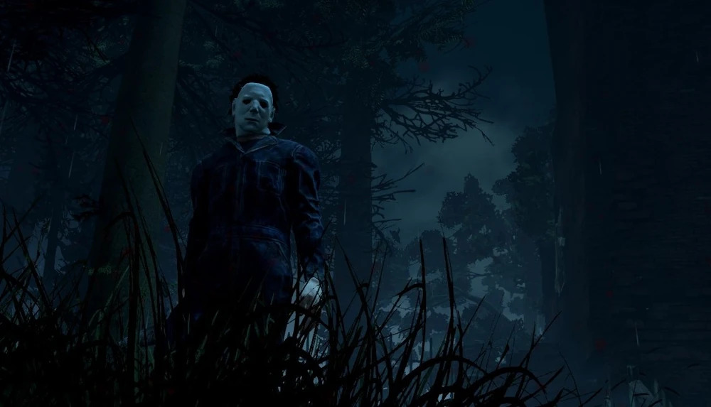

O Vulto
- Nome: Michael Myers
- Genero: Masculino
- Origem: Americano
- Poder: Maldade Encarnada
- Arma: Faca de Cozinha
- Velocidade de Movimento: 105% | 4.2m/s (ME I)
- Velocidade Alt: 115% | 4.6m/s (ME II & III)
- Raio de Terror: 0/16/32 metros
- DLC: The HALLOWEEN® Chapter
- Dublador: Frédéric Poirier
História do Personagem
Alguns humanos são simplesmente sementes ruins. Sementes cheias da destilada e pura forma do mal.
Michael Myers é uma dessas sementes. Ele não tinha nenhum problema em causar a dor dos outros. Ao invés disso, isso era exatamente o que ele procurava. Mas mesmo a vida pode ser difícil para essas mentes cheias de terror. A diferença é apenas como uma pessoas resolve esses problemas. Para Michael, ele tinha que matar para encontrar paz interna. Quando ele tirou a vida de sua irmã, a polícia achou um garoto silencioso vestido de palhaço na cena.
Quando alguém tropeça no fogo crescendo, ninguém derrama gasolina nele. Mas essa foi uma ação feita por oficiais que não tinha ideia como isso iria formar esse demônio no corpo do garoto. Mandar Michael para uma instituição mental foi uma falha tentativa de salvar o garoto. Terapia malsucedida e grito à noite só o tornaram mais introvertido e enlouquecido.
As pessoas tinham fé que Michael Myers acabar como um parênteses, em breve sendo esquecido e enterrado, uma falha que em breve iria desaparecer. Mas então...ele escapou.
Habilidades